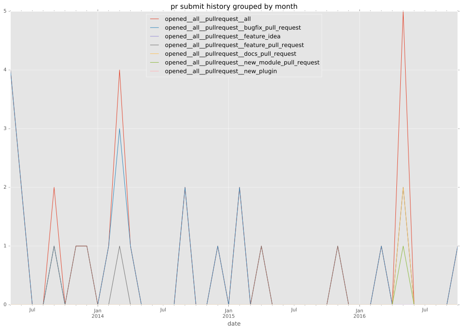

authors
- bleader
maintainers
- JoergFiedler
contributors
- fabianfreyer : 38 commits
- bleader : 35 commits
- JoergFiedler : 27 commits
- AMDmi3 : 17 commits
- mwpher : 3 commits
- jctanner : 3 commits
- abelbabel : 3 commits
- jpmens : 2 commits
- bcoca : 2 commits
- abadger : 2 commits
- sivel : 1 commits
- ricard33 : 1 commits
total issue counts
feature pull request: 8
pullrequest: 28
docs pull request: 2
bugfix pull request: 18
issue: 7
bug report: 7
issue history
pullrequest history


days open by issue type
bugfix pull request
count: 26
std: 0.808607540063
min: 0
max: 3
median: 0.0
mean: 0.576923076923
all
count: 47
std: 106.486547643
min: 0
max: 561
median: 1.0
mean: 41.4680851064
pullrequest
count: 0
std: nan
min: nan
max: nan
median: nan
mean: nan
docs pull request
count: 3
std: 2.88675134595
min: 2
max: 7
median: 2.0
mean: 3.66666666667
feature pull request
count: 13
std: 88.2869011976
min: 0
max: 290
median: 47.0
mean: 68.9230769231
issue
count: 0
std: nan
min: nan
max: nan
median: nan
mean: nan
bug report
count: 5
std: 242.958432659
min: 0
max: 561
median: 124.0
mean: 205.4
closures grouped by total days open